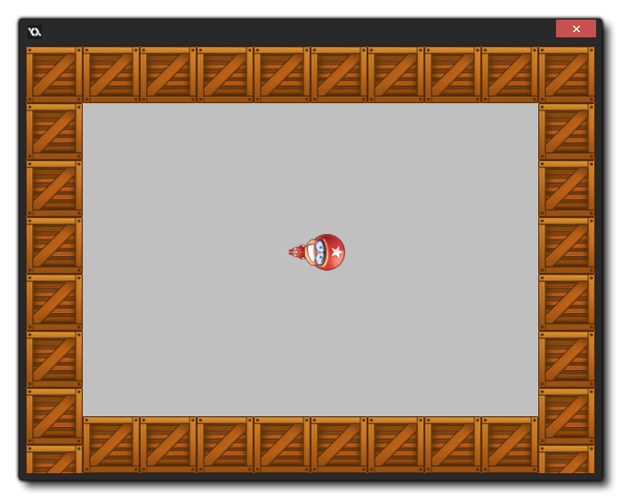

Tutorial
Page 11 of 15
Saving and Testing
You might not have realized it but our game is ready now to play! The sprites and sounds have been added, the game objects have been designed and the first (and only!) room in which the game takes place has
been created. Now it is time to save the game and to test it.
Saving the games works as in almost any other Windows program - just click the Save icon and GameMaker will save your project. You can also go to the File menu and choose Save
As to rename your game and save it in a different folder. Also note that GameMaker: Studio will automatically save your game every time you press play, so if you have made changes and are
not sure whether they are going to be kept after testing or not, it may be a good idea to save the project under a different name before making the changes and testing.
Next we need to test the game. Testing is a crucial component of creating a game, and although you can test it yourself, you should also ask others to test it when you are nearing completion of the project. Testing
(or running the game in general) is simple! Choose the command Run Normally from the drop down Run menu in the main GameMaker window, or press the green Play button at
the top of the IDE. The game will be saved, and then run, and if you did not make any mistakes, the room will appear on the screen with the clown moving inside it.

Try testing it now and see whether the game behaves as expected. You should hear the correct sounds and the speed of the clown should increase every time you click on it. To end the game click on the "close" button
at the top right of the game window.
Now it is time to fine tune the game. You should ask yourself, for example, the following questions: Is the initial speed correct? Is the increase in speed correct? Is the room size correct? Did we pick effective sprites
and sounds for the game? If you are not happy, change these aspects in the game and test again. Remember that you should also let somebody else test the game, because since you designed the game it might be
easier for you than for other people.
Once you are happy with your game you should create a stand-alone executable for the game. This is a version of the game that can run without the need for GameMaker. This is very simple to do, but first
you must choose a "target" for your game from the drop-down menu at the top of t he GameMaker window. I suggest choosing "Windows" just now, as that is what this game is designed for. In the File
Menu choose the command Create Application. You have to indicate the place to save the installer too, as well as give the file a name. Once you have done this, you'll see the compile window showing
you the progress and when it reads "Finished!" you're all set. You can now close GameMaker and still play the game by installing it on your machine, or distribute it for friends to play.
© Copyright YoYo Games Ltd. 2015 All Rights Reserved